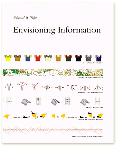

Envisioning Information

by Edward R. Tufte (1990)
In much the same vein as Tufte's The Visual Display of Quantitative Information, and displaying the same calibre of deeply incisive common-sense that cuts to the heart of all that's right and wrong about the art and science of 'information design' - graphic design's more pragmatic nephew.
If you love beauty in highly functional graphics, from maps and diagrams, charts and graphs, tables and typography, then this is for you.
Rating:
10/10 If bad diagrams make you cringe, and good ones make you laugh out loud.
0/10 If you only care about beauty, but not about usefulness. Or if you don't have eyes.
Comments